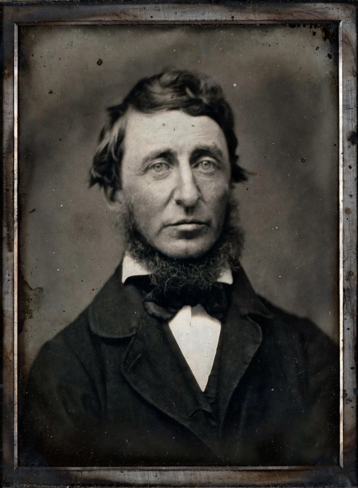

| Born | 12 July 1817, Concord, Massachusetts, U.S. |
|---|---|
| Died | 6 May 1862 (age 44), Concord |
| Occupation | Essayist, poet, philosopher, naturalist |
| Notable works | Walden; Civil Disobedience |
Henry David Thoreau (1817–1862) was an American naturalist, essayist, poet and philosopher. A leading figure in transcendentalism alongside Ralph Waldo Emerson, he is best known for Walden (1854), his account of living deliberately in a cabin he built near Walden Pond, and for his essay "Resistance to Civil Government" (1849), commonly called "Civil Disobedience".

Thoreau was born in Concord, Massachusetts, graduated from Harvard College in 1837, and worked as a teacher, surveyor and in his family's pencil factory. From 1845 to 1847 he lived at Walden Pond on land owned by Emerson. In 1846 he spent a night in jail for refusing to pay a poll tax in protest against slavery and the Mexican–American War — the seed of his essay on civil disobedience.
Thoreau was a committed abolitionist, an early environmental thinker and keen observer of natural history whose late writings anticipated ecology. His doctrine of principled nonviolent resistance profoundly influenced Mahatma Gandhi and Martin Luther King Jr.